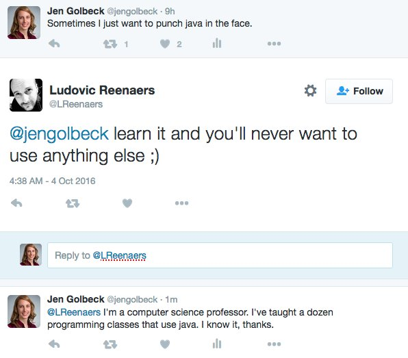
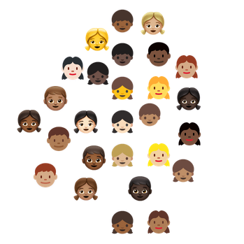

Vox Pupuli.org
Code Motion Berlin 2016
Represented today by
Felix Frank
- compulsive cyclist
- operations person
- open source-ist
https://www.iconfinder.com
This is a talk about
code
culture
but most of all, it's about
you!
It's about
That feeling when...
...you find just the GitHub repo...but then realize
It's unmaintained since your university years.
Also there's that other feeling
Worse if you're not like me
Not only online

Vox Pupuli
do about it?I. Boosting the Puppet module ecosystem
...for more fun with the ForgeII. Valuing culture above code
There's plenty of nice folks.
They're just not as loud as the trolls.

http://unicode.org/emoji/charts/full-emoji-list.html
III. Being vigilant
We are prepared to enforce our CoC
https://smashboards.com/threads/the-ridley-for-ssb4-thread-end-of-an-era.324284/page-341